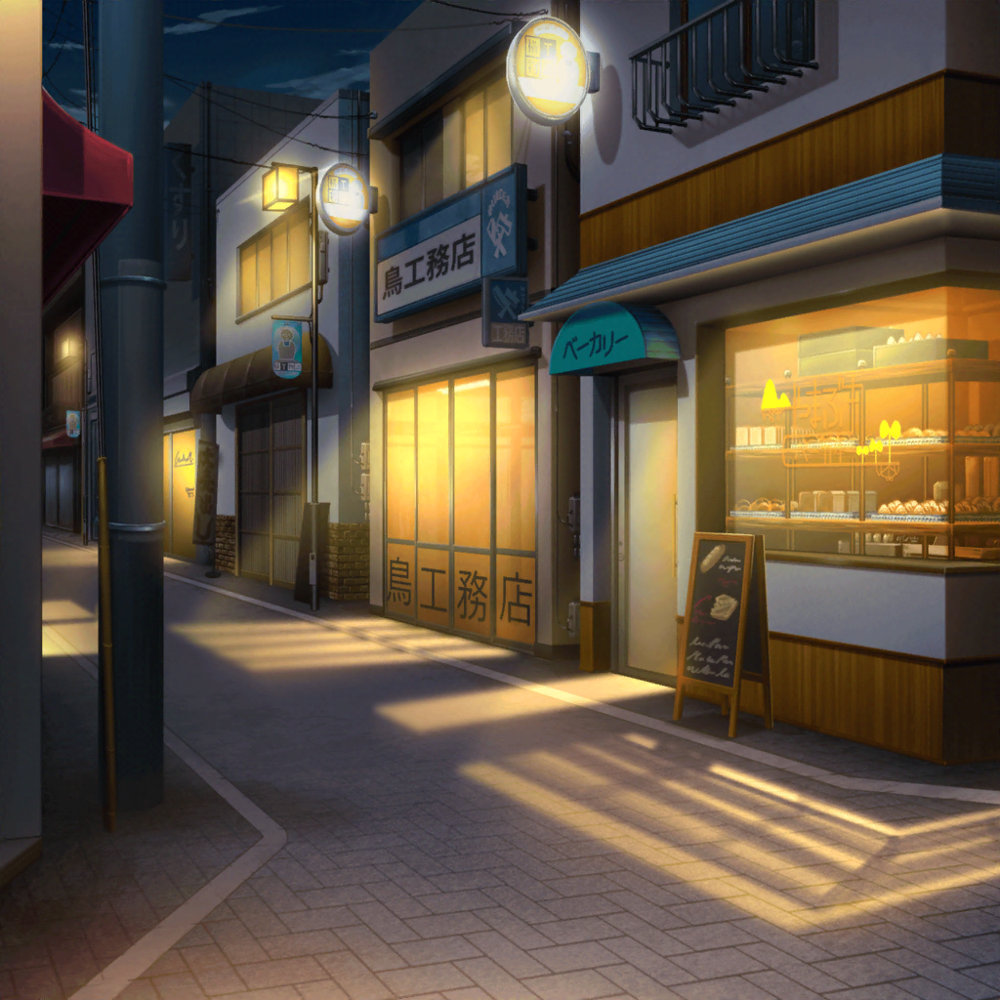
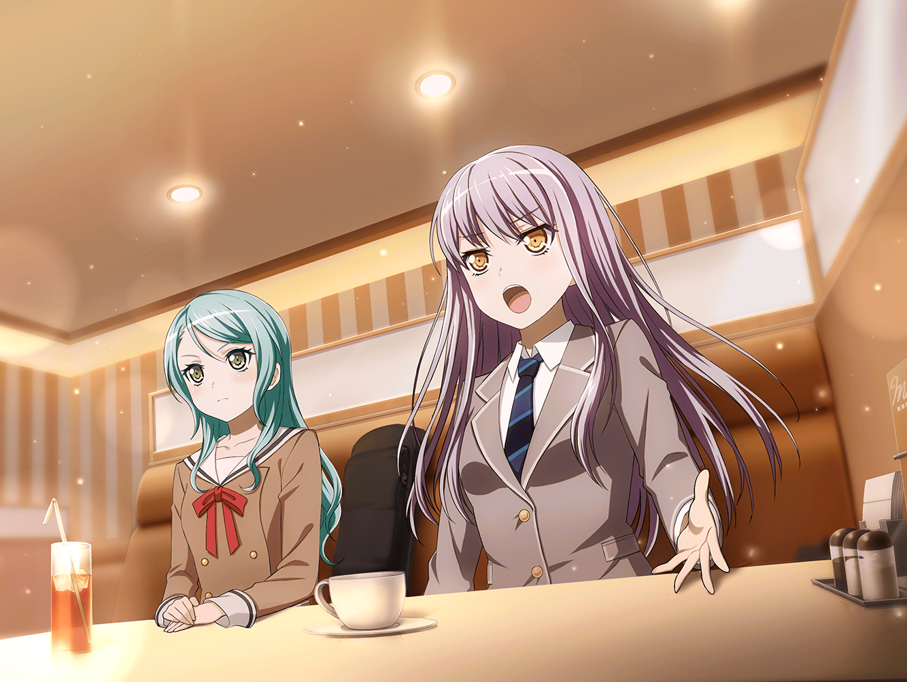

ライブ前日
羽丘女子学園 2-A教室
リサ
（はぁ……明日はついにライブかぁ……）
日菜
ねーリサちー。
うちのお姉ちゃんとバンド組んだってほんとー？
リサ
えっ、お姉ちゃんって……
あ、そっか。ヒナって双子なんだっけ。
——ってあれ？ 紗夜の名字ってたしか……
日菜
そー。氷川紗夜。あたしのお姉ちゃん。
あたしには何にも話してくれないからさー。
いろいろ教えてほしーなっ
リサ
？ いいけど……
なんで紗夜はヒナに話さないのー？
日菜
んーー。まぁいいじゃんそれはっ。
それよりバンドしてる時のお姉ちゃんって
どんな感じ？ 楽しそう？ 嬉しそう？
リサ
えっ？ う、うーん……
いつもと、変わらないんじゃないかなぁ……？

ライブ当日
ライブハウス前
あこ
うん。ついに当日だねっ。
ほらりんりん、このボード見て元気出して！
あこ達のバンド名だよっ！
リサ
Roselia……そっか。
友希那、色々考えてたけどこれにしたんだ〜
あこ
よーしっ！ Roselia初ライブ！！
行くぞーー！
おーーーっ！
燐子・リサ
…………
……っ！ おー……
あこ
……って、えっ？
りんりんだけじゃなく、リサ姉も緊張……
リサ
し……っ！ してない、してないよ〜……
ダンスの大会でも、一緒にステージ出てるじゃん？
あはははは……
リサ
（……はぁ。とかいって、参った……
めちゃくちゃ緊張してるじゃんアタシ……）
リサ
ほらほらいくよー！
時間ぎりぎり！ あの二人に怒られちゃう！

楽屋
紗夜
１分35秒の遅刻よ
リサ
ご、ごめんごめん！
おーっ！ って気合い入れてたからさ☆
二人とも一緒にやりたかったな〜
友希那
馴れ合いはやめて。
気持ちの整理は
個人で済ませてきてもらわないと困るわ
リサ
……っ！
う、うんっ。大丈夫だって。
それくらいちゃんとできてるよ〜
リサ
（本当かな……アタシ。
ベースをやらなくなったのだって、
友希那と釣り合わないと思ったからで……）
燐子
わ、わ……たし……も
みなさんと……演奏するって……決めたから……
——が、がんばり……ます……
紗夜
口ではなく、音での証明をお願いね
リサ
（……バンドで技術が足りないのは、アタシだけ。
……やるしかない。
結果を出して、友希那の隣にいるんだ……！）
あこ
Roselia／闇のドラマー！！ あこもがんばりますっ！
Roseliaって響きがカッコイイ……あ、そういえば
なんでバンド名、Roseliaなんですか
友希那
薔薇のRoseと、椿のCamelliaからとったわ。
特に、青い薔薇……
……そんな、イメージだから……
あこ
イメージ……？
燐子
（青い薔薇……花言葉は『不可能を成し遂げる』……だっけ……）

ステージ
友希那
ラスト、聴いてください。『BLACK SHOUT』
観客たち
ワァアアーーーーー！
友希那ーーーーー！！
音楽ライター１
高校生でこのレベル！
Roselia……
この子たち話題出ますよ。今月のPV数、トップも狙えるかも！
音楽ライター２
今までどこのスカウトも受けなかったが……
友希那は、バンドが組みたかったのか……？
あこ
（わーいっ！ ほらもっと見てっ！
Roseliaって超ーっカッコイイでしょっ！）
燐子
（不思議……あんなに緊張してたのに……
わたし……すごく……楽しんでる……
こんな自分がいるなんて……知らなかった……）
リサ
（……やっぱりこのバンドには、何かある。
ひとりの時より、ずっと上手く弾ける……！）
紗夜
（今井さんのベース、また上手くなってる。
宇田川さんも白金さんも……
そしてこの前よりも、もっと『音』に引き寄せられる……！）
友希那
（——行けるかもしれない。このバンドなら！）

帰り道
あこ
すっごかったね〜っ
ライブハウス出たらキャーって！
初めてのライブでもうファンができちゃったっ
燐子
あこちゃん……あの人たち……
たぶん……さっきのライブ見てた……
紗夜
あれ位で騒がないでちょうだい。
私達が目指してるのは……
あこ
それにしても、お腹減ったよぉ〜〜
リサ
ははっ☆ドラムは特に全身使うもんねー♪
あっ、じゃあさー初ライブの記念に、
みんなでファミレス、行っちゃう？
紗夜・友希那
…………
紗夜
バンドに必要なのは技術と、
目標に対する揺るがない意思だけだわ。
他のものは……
リサ
わかったわかった！ でもさっ！
今のアタシ達には、技術と揺るがない意思を
維持するための活力が必要だと思うんですけど♪

ファミリーレストラン
紗夜・友希那
…………
リサ
あははっ！ お腹いたい！
あこ、もっかい、もっかいリクエスト！
あこ
この……闇のドラムスティックから
……何かが……アレして、我がドラムを叩きし時、
魔界への扉が開かれる！ 出でよ！ 『BLACK SHOUT』！
燐子
（ファミリーレストラン……ふだん来ないけど……
……たのしい……）
リサ
ほらーっ。友希那も紗夜も！
初ライブの記念なんだからさー、
二人もなんか、話して話してー？
紗夜
……湊さんが、こんなところに来るのは意外でした。
私はこういった、得体の知れない添加物系の
メニューは受け付けませんので
友希那
！
……私だって普段は来ないわ。用がないもの。
リサ。私がしたいのは音楽の話だけよ
紗夜
同感ね。……でも、ここはともかく、
今日の演奏はよかった。
今井さん、あなた、上手くなったと思う
リサ
…………！
え……。あ、ありがとう……
友希那
そうね。この短期間で、
Roseliaのレベルは確実にあがった。
あこ、燐子。あなたたちもよ
友希那
だから、本当にこの五人で本格的に活動するなら、
あこ、燐子、……リサ。
あなたたちにも、そろそろ目標を教える
リサ
……！ 友希那……

紗夜
そうですね。
私はそのために湊さんと組みましたから。
確かにここで、意思確認をすべきだわ
友希那
FUTURE WORLD FES.の出場権を掴むために、
次のコンテストで上位３位以内に入ること。
その為にこのバンドには、極限までレベルをあげてもらう
友希那
練習メニューはあとでメールするわ。
音楽以外のことをする時間はないと思って。
ついてこれなくなった人には、その時点で抜けて貰う
あこ
ふゅーちゃー……
燐子
……わーるど……ふぇす……？
友希那
あこ、燐子。……リサ。
あなた達、
Roseliaにすべてを賭ける覚悟はある？